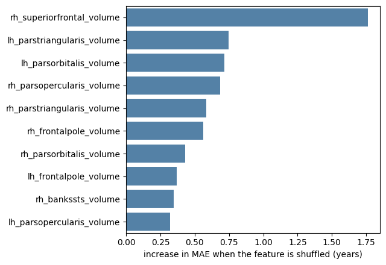
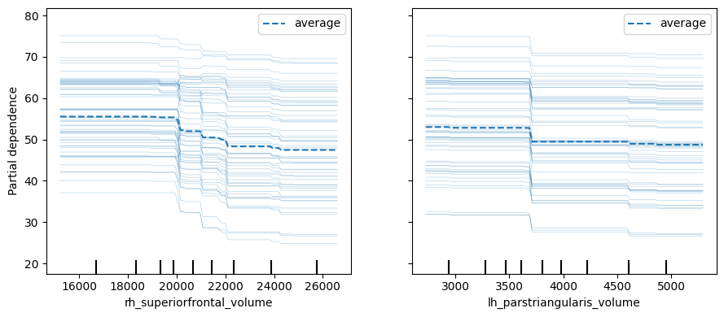

Black Boxes#
Sooner or later someone will tell you that a model must be interpretable to be trustworthy, and that black boxes have no place in medicine. The claim deserves a careful answer, because the careless version of it has held back a great deal of useful work — and because the opposite, careless in the other direction, is worse.
This book’s position follows from everything in chapters 3 to 6: trust in a predictive model comes from how it was validated, not from whether you can read its parameters. A model whose coefficients you can recite but which was never tested on independent data is not trustworthy. A model you cannot read at all, which has been externally validated in three cohorts, tested against its plausible confounders and shown not to respond to the wrong things, is.
That is not an argument against interpretation. It is an argument about what interpretation is for. It is for generating hypotheses, for detecting shortcuts, and for communicating with the people who have to act on the model — not for establishing that the model works.
Model-agnostic tools#
Everything below treats the model as a function you can call. It does not matter whether it is a ridge regression, a random boosted or a neural network.
We will use a gradient boosting model as our black box, and the ridge model as a reference point.
import numpy as np
import pandas as pd
import seaborn as sns
import matplotlib.pyplot as plt
from sklearn.linear_model import Ridge
from sklearn.ensemble import HistGradientBoostingRegressor
from sklearn.preprocessing import StandardScaler
from sklearn.pipeline import Pipeline
from sklearn.model_selection import cross_val_predict, KFold, train_test_split
from sklearn.metrics import mean_absolute_error
from sklearn.inspection import permutation_importance, PartialDependenceDisplay
DATA_URL = "https://raw.githubusercontent.com/pni-lab/predmod_lecture/master/ex_data/IXI/ixi.csv"
ixi = pd.read_csv(DATA_URL).sample(frac=1, random_state=42).reset_index(drop=True)
TARGET = 'Age'
FEATURES = [c for c in ixi.columns if c.endswith('_volume')]
ixi[FEATURES] = ixi[FEATURES].astype(float) # partial dependence needs floats, not integers
train, test = train_test_split(ixi, test_size=0.3, random_state=42)
ridge = Pipeline([('standardize', StandardScaler()), ('regression', Ridge(alpha=100))])
boosted = HistGradientBoostingRegressor(max_depth=3, max_iter=300, learning_rate=0.05,
random_state=42)
for name, estimator in [('ridge', ridge), ('gradient boosting', boosted)]:
estimator.fit(train[FEATURES], train[TARGET])
print(f'{name:18s} test MAE: {mean_absolute_error(test[TARGET], estimator.predict(test[FEATURES])):.2f} years')
ridge test MAE: 9.66 years
gradient boosting test MAE: 8.66 years
Permutation importance#
We met this on the previous page: shuffle a feature and measure the damage. Its great virtue is that it applies unchanged to any model, and that it measures what the model uses rather than what it contains.
importance = permutation_importance(boosted, X=test[FEATURES], y=test[TARGET],
scoring='neg_mean_absolute_error',
n_repeats=20, random_state=42, n_jobs=-1)
ranked = pd.Series(importance.importances_mean, index=FEATURES).sort_values(ascending=False)
plt.figure(figsize=(6.5, 4.5))
sns.barplot(x=ranked.head(10).values, y=ranked.head(10).index, color='steelblue')
plt.xlabel('increase in MAE when the feature is shuffled (years)')
plt.ylabel('')
plt.tight_layout()
plt.show()

Warning
Permutation importance shuffles one feature while holding the others fixed, which creates participants who do not exist: a tiny superior frontal cortex attached to an otherwise large brain. The model is then evaluated on impossible data. With strongly correlated features — our situation exactly — the resulting numbers can be badly misleading, and importance tends to be spread thinly across correlated groups so that nothing looks important. Grouped permutation, where a whole correlated cluster is shuffled together, is the usual remedy.
Partial dependence#
A second question: not how much does the model use a feature, but how? Partial dependence sweeps one feature across its range, averaging the model’s predictions over the observed values of everything else.
top_two = list(ranked.head(2).index)
fig, ax = plt.subplots(figsize=(9, 4))
PartialDependenceDisplay.from_estimator(boosted, test[FEATURES], features=top_two,
kind='both', subsample=60, random_state=42, ax=ax)
plt.tight_layout()
plt.show()

The thick line is the average relationship the model has learned; the thin lines are individual participants (an ICE plot, for individual conditional expectation). Two things are worth reading off such a plot. Is the relationship monotone and plausible, or does it wiggle in ways that suggest fitting noise? And do the individual curves run parallel to the average, or do they fan out — which would indicate that the effect of this feature depends on the others.
Partial dependence inherits the same flaw as permutation importance, for the same reason: it averages over combinations of features that never occur in reality.
Local explanations#
Permutation importance and partial dependence describe the model globally. Clinically, the question is usually local: why did it say that about this patient? The established tools here are LIME, which fits a simple model in the neighbourhood of one prediction, and SHAP, which distributes a prediction among the features using a game-theoretic allocation with attractive formal properties.
They are genuinely useful, and they come with the same caveat in a sharper form. A local explanation is a statement about the model’s behaviour near one point. It is not a statement about the patient, and it is not evidence that the model is right about them. Two models with indistinguishable predictive performance can produce quite different explanations for the same individual, because they found different, equally predictive, combinations of correlated features.
What explanation is good for#
Detecting shortcuts. This is the strongest practical case. If your pneumonia classifier turns out to be reading the portable-scanner marker on the X-ray, an importance analysis or a saliency map will show you — and nothing in your cross-validated accuracy will. Interpretation is a hypothesis generator for the confounder tests of chapter 6, and those tests are what settle the question.
Generating scientific hypotheses. A forward pattern showing that the model leans on frontal regions is a reason to go and study frontal regions. It is not itself a finding about the brain.
Communicating with the people affected. A clinician deciding whether to act on a score needs something to reason about, and a patient may have a right to an explanation of a decision that concerns them. These are real requirements, and they are not satisfied by a validation table.
What it is not good for#
Establishing that the model works. Only validation does that.
Establishing causation. An importance ranking says what the model uses, not what would happen if you changed something in the world.
Reassurance. A plausible-looking explanation of a broken model is worse than no explanation, because it manufactures confidence. This is the real danger of explainability tools: they almost always return something, and what they return almost always looks meaningful.
So: are black boxes acceptable?#
The honest answer depends on the job.
When the model’s output drives a decision with a known cost structure and it has been validated in the population where it will be used, opacity is tolerable — as it is for plenty of drugs whose mechanism is not understood. The evidence is in the trial, not the mechanism.
When the model is meant as a scientific claim about how something works, opacity is the whole problem: an uninterpretable model is not a theory, and no amount of accuracy makes it one.
And when the decision is contestable — when a person must be able to challenge it — an explanation is an ethical requirement independent of whether it improves accuracy.
There is also a middle route that is too often forgotten: ask whether you need the black box at all. On tabular biomedical data of the size we usually have, a well-tuned linear model is often competitive — though not always. The gradient boosting model above beat our ridge by a year on this split, but that comparison is not like-for-like: the ridge used a hand-picked alpha and the boosting model hand-picked settings. Chapter 8 runs that comparison properly. If a simple model performs as well, the interpretability debate is moot, and you should take the simple model; if it does not, you have measured what the opacity is buying you, which is the right basis for the argument.
Exercise 7.3
Compare the top ten features by permutation importance for the ridge model and for the gradient boosting model. How much do the lists overlap? What would it mean for your scientific conclusions if two models with nearly identical accuracy disagreed about which regions matter?
Solution
The overlap is usually partial. Chapter 8’s fair comparison puts these two models within about seven-tenths of a year of each other, so neither list can be “the” set of important regions — the data simply does not determine a unique answer, because the features are redundant. The right conclusion is not to pick the list you prefer, but to report that the importance ranking is not identifiable from these data, and to design a study that can settle it if it matters.
Exercise 7.4
Deliberately build a shortcut. Add a new feature to the dataset that is simply age + noise,
refit, and confirm that the model’s accuracy jumps. Now check whether permutation importance
reveals the culprit. Then imagine the shortcut had been something plausible-looking, such as
scanner ID.